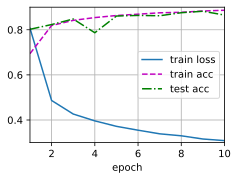

4.3. Cách lập trình súc tích Perceptron Đa tầng¶
Như bạn đã có thể đoán trước, ta có thể dựa vào thư viện Gluon để lập trình MLP một cách súc tích hơn.
from d2l import mxnet as d2l
from mxnet import gluon, init, npx
from mxnet.gluon import nn
npx.set_np()
4.3.1. Mô hình¶
So với việc dùng gluon để lập trình hồi quy softmax
(Section 3.7), khác biệt duy nhất ở đây là ta thêm
hai tầng Dense (kết nối đầy đủ), trong khi trước đây ta chỉ có
một. Tầng đầu tiên là tầng ẩn, chứa 256 nút ẩn và áp dụng hàm kích
hoạt ReLU. Còn tầng thứ hai là tầng đầu ra.
net = nn.Sequential()
net.add(nn.Dense(256, activation='relu'),
nn.Dense(10))
net.initialize(init.Normal(sigma=0.01))
Lưu ý rằng như thường lệ, Gluon sẽ tự động suy ra chiều đầu vào còn thiếu cho mỗi tầng.
Vòng lặp huấn luyện ở đây giống hệt như lúc ta lập trình hồi quy softmax. Lập trình hướng mô-đun như vậy cho phép ta tách các chi tiết liên quan đến kiến trúc của mô hình ra khỏi các mối bận tâm khác.
batch_size, num_epochs = 256, 10
train_iter, test_iter = d2l.load_data_fashion_mnist(batch_size)
loss = gluon.loss.SoftmaxCrossEntropyLoss()
trainer = gluon.Trainer(net.collect_params(), 'sgd', {'learning_rate': 0.5})
d2l.train_ch3(net, train_iter, test_iter, loss, num_epochs, trainer)

4.3.2. Bài tập¶
- Bằng việc thử thêm số lượng các tầng ẩn khác nhau, bạn hãy xem thiết lập nào cho kết quả tốt nhất (giữ nguyên giá trị các tham số và siêu tham số khác)?
- Bằng việc thử thay đổi các hàm kích hoạt khác nhau, bạn hãy chỉ ra hàm nào mang lại kết quả tốt nhất?
- Bạn hãy thử các cách khác nhau để khởi tạo trọng số. Phương pháp nào là tốt nhất?
4.3.3. Thảo luận¶
4.3.4. Những người thực hiện¶
Bản dịch trong trang này được thực hiện bởi:
- Đoàn Võ Duy Thanh
- Lý Phi Long
- Vũ Hữu Tiệp
- Phạm Hồng Vinh
- Lê Khắc Hồng Phúc
- Phạm Minh Đức